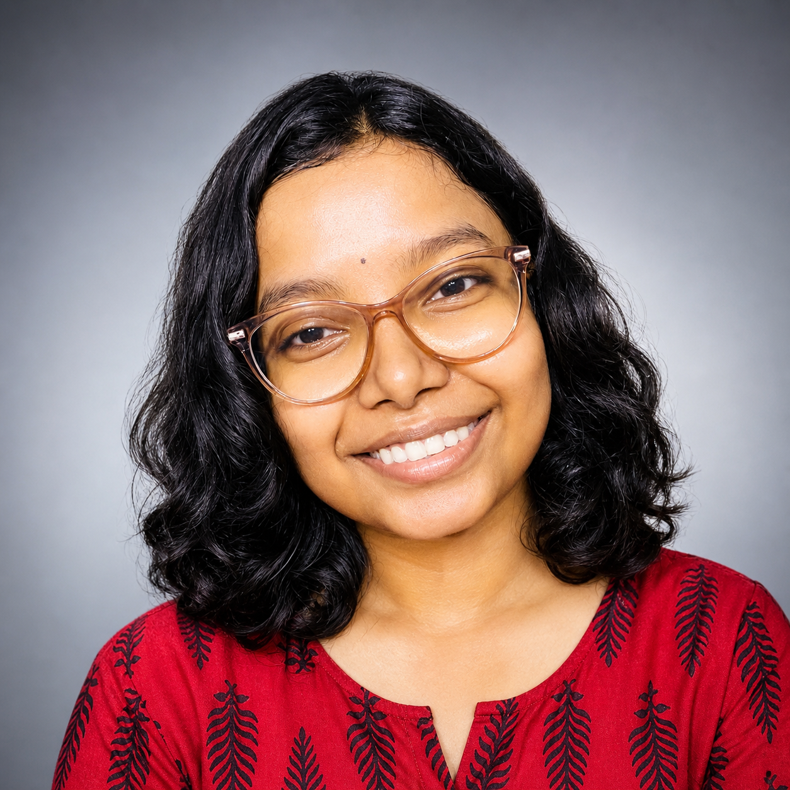

Ishita Bala

Summary
A first-year CSE student on a quest to turn coffee into code and ideas into innovation.
Passionate about coding and love solving DSA problems to challenge my brain! Which i have recently started.
I’m particularly interested in web development, AI, and open-source projects. I love collaborating with others and continuously learning new technologies to grow as a developer.
Education
-
Bachelor of Technology (B.Tech)
RCC Institute of Information Technology
2025 - 2029
-
Higher Secondary Education
Jupiter Public School
2023 - 2025
-
Secondary Education
Bishop Morrow School
2019 - 2023
Work Experience
-
Student Developer
Personal Projects
2025 - Present
- Created basic HTML projects like resume websites and to-do apps.
- Practiced problem-solving and coding fundamentals.
- Explored app development using React Native.
Skills
- HTML
- CSS
- Basic Programming (C, Python , c++ , Java)
- Problem Solving
- Communication Skills
Awards & Certifications
- Completed Web Development Course
- Participated in Coding Competitions
More About Me